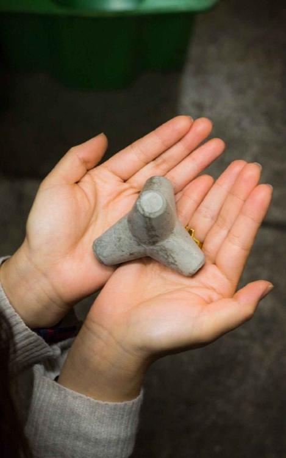
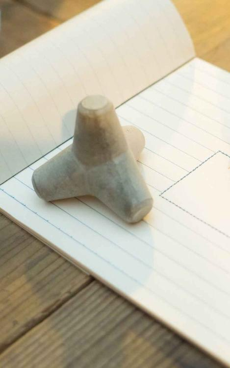
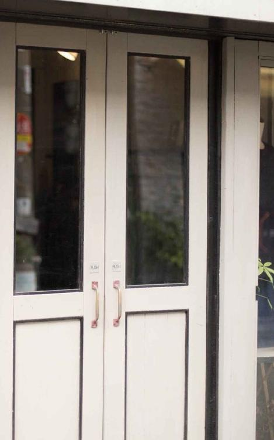
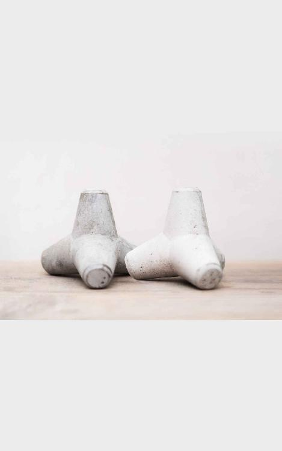

| テトラポットとわたし: 初恋は、ある日突然目を覚ます。 (TEAM"aoco"BOOKS) | |
| 姫野 蒼子 | |
| (2017) | |
テトラポットとわたし
卒業して早二〇年、皆さまいかがお過ごしでしょうか？
二〇年ぶりに懐かしいみんなで会ってみませんか？
こんな文章から始まるはがきが届いたのは、梅雨時の雨がしとしと降り続く日のことだった。
玄関先のポストに手紙の束を取った瞬間、手が滑って一枚はがきが落ちた。
雨に濡れてわたしの名前が少しにじんだそのはがきを拾って、裏返してみる。
差出人はなんと、小学六年の時の担任の田村先生から。
どうやら今年、定年退職を迎えたらしい。
有り余る時間が出来たから、みんなにぜひ会いたい、そう綴ってあった。
小学校の同窓会の案内だった。
「でもさ、普通同窓会って、生徒が先生を呼ぶもんじゃない？」
「先生がみんなを招集するなんて、聞いたことないよ」
わたしはその日のうちに、中学校時代からの親友の真子に電話を掛けていた。
届いた案内をネタに、中学時代の話に花が咲く。
真子も同じ小学校出身だったけれど、仲良くなったのは中学で同じクラスになってからで、小学校の頃は、顔は知っていたけど話もしたことがなかった。
「多分、こうでもしないと、うちのクラス、誰も言い出したりなんかしないと思うわ」
わたしはそうは言ったけれど、果たして小学校の同窓会ってどのくらい普通あったりするのかな、と考えていた。
真子も同じことを思ったようで、こう言ってのけた。
「高校ならともかく、小学校の同窓会なんかほとんど聞かないよね。そもそもわたしんとこは、高校だって同窓会なんかあり得ないと思うわ」
真子に行くのか、と聞かれたけれど、わたしは「わからない」と答えた。
実際に、小学校の友達の顔を思い浮かべても、誰一人として未だに付き合いがある人はいない。
わたしはまだ、結婚もせず当時と同じ家に住んでいたから、たまに同級生を見かけることもあるけれど、もうすでに挨拶すらすることもない。
そんな人たちと会って、いったいいまさら何を話せばいいんだろう。
他のみんなも戸惑っているんじゃないんだろうか？
「懐かしい」
たったそれだけで人に会いに行く。
そんなことは、よっぽど思い入れがある人か、もしくは限りなくヒマな人だけなんだとも思う。
そうして、そんな日常の中でわたしも、同窓会のことすら忘れてしまっていた。
わたしの自宅の最寄り駅には併設してショッピングモールがある。
仕事の帰りには、時間があったり、気が向いた時には、わたしも用もないのにウィンドウショッピングを楽しんだりもしていた。
その日も、しとしとと雨が降っていた。
駅の改札を出た瞬間、空を見上げると、じめじめとした梅雨空が、わたしの心をどんよりとさせる。
このまま傘を広げて家に帰る気にもなれなかった。
わたしは、真っすぐいけばそのまま商店街に入っての家路だけれど、左に曲がってそのままキラキラとしたショップが立ち並ぶモールに入った。
別にお目当てのものがある訳でもない。
買う必要のあるものがある訳でもなかった。
ただ、目に映るままに、気分が赴くままに、お店に並んでいる商品を見て歩いていた。
しばらく歩いて、とある雑貨店で、わたしは小さな見覚えのあるコンクリートのブロックを見つけた。
「かわいい！」
思わず声に出してしまって、手に取ってみる。
四つ脚がある、けれど、地面につくのは脚が三つ。最後の一脚は天井を向いている。
だけど、どの方向に転がしても同じ形になる、海岸の沖の方によくあるコンクリートブロック、「テトラポット」のミニチュアだった。
手のひらに乗るくらいのかわいいサイズにリメイクされて、棚にひとつだけポンと置かれていた。
手に取ると、意外と重さがある。
これ、なんに使うんだろう？
ペーパーウエイト？
ただの飾りの置物？
わたしはコロコロと手の上で転がしながら、じっくりと見ていた。
なんとなく、懐かしい感じがする。
何かふと、心の中に思いだすようなことがあったのだけれど、それが何なのか、思い出すことができない。
さらに転がしたら、値札シールが付いてあった。
四九〇〇円...。
「君、こんなに小さくて可愛いのに、結構な値段するね」
わたしは、目の前にテトラポットを持ってきて、そう語り掛けると、元ある場所に戻して何も買わずに、お店を後にした。

次の日、仕事をしていると、隣りの同僚がいきなりこんなことを言ってきた。
「ねえねえ、坂上さん、海に行ったときに沖に見えるコンクリートのブロックってなんて名前だったっけ？」
「え？」
「いきなりでごめんね。なんか頭の中にあの形が出てきてさ、でも名前が出て来なくて、ずっと朝から気持ち悪くてしかたがないんだよね」
彼女はメモ用紙にさらさらとその形を書いてみせた。
脚は四つ、でも地面についているのは三つ。
一つは天井を向いている。
「テトラポット！」
それはまぎれもない、昨日わたしが雑貨屋さんで見た、「テトラポット」だった。
わたしは、思わず口に出した。
「そうそう！テトラポットだ！すっきりしたーー」
お隣の同僚はわたしの顔を見て、にっこり笑った。
「なんでかな？朝からずっとこれが気になって仕方なかったの」
テトラポットか、とつぶやきながら、自分の仕事に戻っていった。
「昨日から「テトラポット」づいてるわ、わたし」
隣りの同僚の横顔を見つめながら、少し不思議な気持ちになる。
けれど、すぐに仕事に戻ってそんなことも忘れていた。
お昼休み、ご飯を食べに食堂に出た。
うちの会社には食堂と、休憩室にテレビがあって、休みの時間には見ることができた。
配膳のトレーを持ちながら、テレビをふと見るとちょうど海での中継が映っていた。
その背後には「テトラポット」があった。
テレビでは、「テトラポット」をメインに放送している訳ではなかった。
ただ、そこに映り込んでいる、それだけだった。
だけど、わたしは放送の内容よりも、「テトラポット」だけに見入ってしまっていた。
しばらくその場でトレーを持って立ちすくんでしまった。
ご飯を食べて、自分の席に戻ると今度は部長に呼ばれた。
新しい仕事の打診だった。
部長に渡された資料を見て、わたしは飛び上がった。
「テトラクロロメタン」について。
「四塩化炭素のことなんだけど。この資料をプレゼン用にまとめてくれないか？」
「はい、わかりました」
またここでもテトラ...。と思ったけれど、テトラポットじゃない。
席に戻ってググってみたら、テトラは「四」を意味するギリシャ語接頭辞だということだった。
なるほど、四本脚だから、テトラポットなんだ。
ちなみに「テトラポット」は特定の製品の登録商標であり、普通名称ではないようで、本当は消波ブロックというらしい。
海岸や河川などの護岸や水制を目的に設置するコンクリートブロックのこと。
これって、ホッチキスとかウォークマンと同じようだ。
たくさん「テトラポット」について調べまくっているわたしは、気が付けば、頭の中がテトラポットでいっぱいになっていた。

こんなことって、人にはよくあることなんだろうか？
何気ないことがきっかけになって、そのことでいっぱいになってしまうようなこと。
でも「恋」ってこんなものなのかもしれない。
自分の理想には程遠い人だったとしても、何気ないちょっとしたエピソードがきっかけになって、その人が気になって仕方なくなるような、そんなこと。
じゃあ、わたしは今「テトラポット」に恋してるのかも？
と思ったら笑ってしまった。
確かに面白い姿形をして、愛らしいけれど、人ではない。
「でも恋をするなら、人に恋をしたいものだわ」
わたしはそう呟くと、一つため息をついた。
三年前、彼と別れてしまってから、それ以来、恋らしい恋はしていない。
素敵な出会いはあったものの、どうも自分の中では二の足を踏んでいる。
もうわたしは今年で三三歳になる。
三〇歳までは、結婚のことも考えると、恋愛もしなきゃ、とシャカリキになってしまっていたような気もする。
元カレと別れたのも、三〇歳までに結婚したい、とせっついてしまったからだ。
早く子どもが欲しかったわたしは、早く結婚したかったのだ。
こういう時って、女の人って不利だと思う。
男の人は何歳になっても子どもを作ることが出来るけれど、女にはタイムリミットがあるからだ。
けれど、今ではもうすでに諦めモードだ。
今の歳になってしまうと、学生時代の友達ももう半分以上は結婚してしまっている。
小学生の子どもがいる子もいる。
自分の分身はどれほど可愛いか、と思っていたけれど、先に結婚した子の話を聞いたりしても、子育ては思った以上に大変なようだ。
なによりもお金がかかる。
自分のやりたいことは諦めないといけない、と嘆いている人もいた。
わたしは何よりも、そこまでしても子どもが欲しいとは今は思えない。
だからって、今の生活が楽しいとも思ってはいなかった。
「ま、なるようになる、よね」
そう自分自身に言ってみるけれど、それはなんとなく空しい感じもした。
負け犬の遠吠え、って誰かが言っていたことも思い出していた。
仕事の帰り、自宅の最寄り駅からモールに寄って、毎日ミニチュアのテトラポットを見に行くのがわたしの習慣になったのはこの日からだった。
なんとなく、あの「テトラポット」は、わたしの帰りを待っていてくれている気がする。
手の上で転がして、心の中でいろいろと話しかけて、そして帰るのだ。
ある時は、会社でのイヤなことを。
またある時は、家族であった哀しい出来事を。
友達と喧嘩した時も、少し楽しい映画を見た時も、わたしはテトラポットに話しかけていた。
はたから見たら、怪しい女なのかもしれない。
けれど、なぜか「テトラポット」を見るとなんだか、懐かしい気分になるのだ。
本当に不思議な気分だった。

数ヶ月経ったある日、スキップしたい気持ちで、嬉しい気持ちを抱えて、いつものようにモールの雑貨店に入っていった。
夏のボーナスが出た。
しかも、ボーナス査定で部長が最高級の評価をつけてくれたので、わたしのボーナスは去年の二倍にもなっていた。
「早く、わたしのテトラちゃんに伝えなきゃ」
そう思って、雑貨屋さんのいつもの場所に立ってみた。
だけど、テトラポットはそこにはなかった。
店中探してみたけれど、どこにもなかった。
わたしは、とても焦っていた。
さっきまでのウキウキした気分はどこかに行ってしまったかのように、うちのめされていた。
売れてしまったんだ。
そんな言葉が頭によぎって離れない。
ずっとテトラポットはそこにあるものだと思っていた。
こんなもの、誰も買わない、絶対に売れることなんかない、とさえ思っていた。
なんでわたし、買って家に持って帰らなかったんだろう...。
後悔先立たず、ってこういう時に言うんだ。
そう思ったら、力がなくなってしまうような、そんな気がした。
フラフラとして、その日はどこをどうやって家に帰ったのかもわからなかった。
それから数日は、その雑貨店に毎日寄ってみたけれど、「テトラポット」に会えることは叶わなかった。
一品ものだったのだろうか？
一つ売れてしまったら、お店の人がまたもう一つ仕入れてくれることも、少しだけ期待していた。
だけど、その店に再びテトラポットがやってくることはなかった。
「最近、坂上さん元気ないね」
会社では隣りの席の同僚に聞かれた。
せっかく連絡したのに、ＳＮＳも既読無視をする、と友達には嘆かれた。
食欲がなくなってしまった、と母親にも心配された。
少しのことで、晴れた天気もどんよりしてしまうから不思議だ。
しかも雑貨屋さんにあった「テトラポット」がなくなってしまったこと。
わたしにとっては一大事だったけれど、こんなこと、恥ずかしすぎて誰にも言うことなんかできない。
間違いなく、「そんなことで」落ち込んでいるわたしを笑うに違いない。
そんな中、数日経ってわたし宛てに「ゆうぱっく」がやってきた。
両手で持ってもとても小さな箱に入った荷物だった。
差出人は小学校六年生の時の担任、田村先生から。
わたしは慌てて、開けて、驚いてしまった。
あの「テトラポット」が入っていたからだ。
手に取って眺めてみる。
不思議な感じがした。
キラキラと、光の粒がテトラポットから溢れ出してきたような気がした。
フッと息を吹きかけてみる。
その粒がふわーっと周り一面に広がってきた。
綺麗だ。
わたしは夢中になってもっと息を吹きかけてみた。
するとテトラポットからさらにたくさんの光の粒が一気に溢れ出してきた。
周りが光のオーラに包まれて、真っ白になっていく。
光の中に誰か、男の子の姿が見えた。
彼は何かをわたしに語り掛けていた。
わたしも必死になって聞こうとしてみた。
わたしが何かを話すたびに、光のオーラが広がりを見せ、男の子の姿もはっきり見えるのだけど、男の子の言葉は聞こえない。
そして、その光は小さくなってしまって、消えてしまった。
これって何だったんだろう。
何やら夢の中にいるかのようで、楽しい気分にもなる。
テトラポットを頭にのっけて、考えてみる。
わたしはあの男の子と、どこかで会ったことがあるような気がしていた。
気はするけれど、それがどこでかが、全く思い出せない。
それよりも、わたしは周りで何が起こっているのか、よくわからなかった。
よく考えてみる。
テトラポットに気を取られてしまって、他に何か入ってないか、見てなかった。
そうだ、きっと手紙くらい入っているはず...。
そう思って、また慌てて箱を探ってみる。
箱の底に小さく折りたたまれた手紙があった。
坂上 ひろみさん。
あなたから同窓会の出欠の連絡が来ていないことを心配しています。
貴女と今でも連絡を取っているという人がクラスにいなかったので、確認してもらうことが出来ませんでした。
忙しくて来れないのであれば、仕方がありません。
当日あなたにお渡ししようと思っていたモノを先にお送りします。
これはある人からあなたに渡すように、と頼まれたものです。
ぜひ受け取ってください。
もしも、都合が付くようであれば、ぜひ同窓会に来てくださいね。
田村 美智子
わたしは手紙を何度も読んでみた。
読めば読むほどに、わたしの中で疑問ばかりが膨らんでいった。
・なぜ、テトラポットなのか。
・わたしにこれを渡すように言ったある人って誰？
・そもそも同窓会っていつ？
同窓会のことなんか、すっかり忘れていた。
案内は、確か往復はがきだった。
わたしは必死になって、来ていたはずの案内を探した。
「あった...」
家の中をくまなく探して、やっと見つけた一枚の往復はがき。
その日付を見てさらに驚いた。
次の日曜日だ！今日は木曜日だから後三日後だった。
先生の手紙通り、そもそも今でも繋がっている友達は一人もいない。
二〇年前のことなんか、ほとんど覚えていないのだ。
今さら会いたいと思う人もいなかった。
全く興味がない同窓会だった。
もちろん、行く気もなかった。
だけど...。
明らかに、先生はわたしが連絡をしてくるように仕向けている。
「こんな風に書かれちゃ、行くしかない、よね？」
そして、わたしは同窓会に参加することになってしまったのだった。
同窓会の当日...。
お昼の時間に合わせて設定された同窓会。
会場も自宅の最寄り駅近くのお店だった。
わたしは会場の案内と、先生から送られてきたテトラポットをカバンに忍ばせて家を出た。

そして、おそるおそる、会場になっているレストランの扉を開けた。
わざと少し遅めに来たので、もうすでに随分と人が集まっていた。
知っている顔のはずだけど、なんせ二〇年も経っている。
どの顔を見ても誰だかわたしにはわからなかった。
このままそっと、帰ろうかしら...？
そう思った瞬間のことだった。
「坂上！久しぶり！」
レストランに入るのに、躊躇していると、後ろから呼びかけられて飛び上がる。
驚いて、振り返ると、背の高い男性が満面の笑みでわたしに笑いかけていた。
だけど、誰だかわからない。
「坂上、俺だよ俺、海原。海原弘明。よく来てくれたよな」
「海原くん？」
おぼろげながらに、小学生の頃の記憶がよみがえる。
けれど、全然面影がない。
「海原くん、カッコよくなったね」
わたしがそう言うと、海原くんはカッと真っ赤になった。
照れてるみたい。
わたしは、そんな海原くんがかわいい、と思った。
海原くんに促されるように、中に入ると、もうすでに来ていた人たちが一斉にわたしの顔を見た。
そこで一気に緊張してしまった。
今度は、わたしが真っ赤になってしまった。
もっとも、わたしは照れたのではなかったのだけど。
わたしはこういう場が、とても苦手なのだ。
田村先生は、一番奥で、わたしの顔を見て満足そうにうなずいた。
わたしは、先生に会釈をしながら、テトラポットのことを聞かなくっちゃ、と意気込んだ。
けれど、いろんな人から話しかけられ、先生もいろんな人と話をしていて、なかなかそのチャンスがない。
それでもわたしは、人と話をしていても、先生と話せるかどうかを一生懸命伺っていた。
わたしはずっと、先生を見つめていたように思う。
「先生、なかなかあかないよな」
「うん、当たり前だけど人気者だよね...ってえ？」
心を読まれたわたしは、その声の主を見た。
海原くんだった。
「坂上さ、テトラポットの話、覚えてる？」
唐突に「テトラポット」の話が出てきたので、さらにびっくりしてしまう。
「なんでその話、海原くんが知ってるの？」
「だって、小学校の時、二人で話しただろ？」
「え？小学校の時？」
「え？」
どうやら、海原くんはわたしが思っていることとは、違う話をしているようだった。
小学校の時に、わたしと「テトラポット」の話をしたことがある、と海原くんは言う。
だけどどうしても、その話をわたしは思い出すことができなかった。
海原くんに会うまで、彼のことすらすっかり忘れていたくらいだ。
小学校の頃のことなんて、覚えているわけがない。
わたしは、思わず海原くんの顔をジッと見つめた。
そこだけの時間が止まってしまったかのように、二人で見つめ合う状況になってしまった。
みるみるうちに、海原くんの顔はどんどんと赤くなってしまって、わたしから目を反らした。
「ごめん、そんなに見つめられると照れるわ」
そう言われて、気が付いた。
わたしはすぐに人の顔をジッと見つめてしまうクセがある。
だけど、たった数秒の話だ。
そんなに照れなくても。
そう思ったので、言ってしまった。
「海原くんってそんなにカッコイイのに、案外かわいいのね」
海原くんはその場でしゃがみ込んで、顔を伏せてしまった。
そして、くっくっくっ、と笑いをこらえている。
「え？何かおかしいことでもわたし言った？」
しゃがみ込んだ間から顔を少しだけ出して、海原くんは何か言っていたので、わたしも海原くんの隣りにしゃがみ込んだ。
「何？」
「いや、坂上は変わんないなって思って」
何をもって、変わらないって言っているのかが、わたしにはわからなかった。
わからなかったけれど、少なくとも、海原くんは変わったと思う、そう思った。
けど、わたしは口には出さなかった。
二人して、しゃがみこんだ状態で、海原くんは何かポケットから出してきた。
「あっ！それ、わたしのテトラポット！」
海原くんは、にっこり笑うと「はい」ってわたしにテトラポットを手渡した。
そして言った。
「これ、坂上が持ってて。また必ず取りに戻るから」
「取りに戻る？でも、これわたしのテトラポットでしょ？」
ハッとして、カバンの中身を確認する。
カバンの中から同じテトラポットが出て来た。
「あっ！」
「そういうこと。それ俺のだから」
わたしは唖然とした。
余計に何がなんだかわからなかった。
海原くんはそれから何も言わずに、先生のところに行って、何かを話をしたかと思うと、またわたしのところに戻ってきて、わたしの腕をポンと叩いて言った。
「じゃあな、俺、頑張ってくるから、坂上、また会おう」
そして、颯爽とレストランの扉から出て行ってしまった。
風のように、あっという間の出来事だった。
わたしは、テトラポットを二つ抱きしめたまま、状況が飲み込めずにただその場で立ちすくんでしまっていた。
何が起こったのかもわからずに。
しばらくして、田村先生がわたしのそばにやってきた。
「坂上さん、来てくれてありがとう。今日はあなたが来てくれなかったらこの同窓会は意味がなかったの」
そう言って、先生は海原くんの話をした。
海原くんは、小学校を卒業してすぐに、難病を治すためにアメリカに渡って中学の三年間はアメリカで過ごしたらしい。
先生によると、彼は、アメリカに行くのも手術をするのも嫌がっていたんだけど、卒業式にわたしが何気なく「海原くん、また会おうね」って言ったその言葉で、生きようと思ったらしい。
そして、なんとか病気を克服して、元気になってアメリカで大学まで過ごして、就職もした。
「けどね、去年また病気が再発したのよ。
また手術と長い闘病生活になるのね」
周りは楽しそうにざわついているのに、先生とわたしの間だけ、シンとした空気が漂っている気がした。
「そんな中でほんの一週間だけ、一時帰国するって言うからね。
どうしても会わせてあげたかったのよ。
今日は飛行機の時間がギリギリだったから...でも会えてよかった」
先生の話はいきなりすぎて、わたしの頭は全くついていけてなかった。
もともと、勘がいい方ではない。
じっくり考えないと、理解できないこともたくさんある。
だからこそ、あまりいろんなことが気にならないのかもしれないのだけれど。
「彼からはよくお手紙をもらっていてね。
ずっと話は聞いていたのよ。
どうしても彼の願いを叶えてあげたかったの。
貴女は海原くんの幸運の女神さんみたいだから...」
先生はわたしを見て、にっこり笑った。
海岸線、海の見える港町で私たちは育った。
中学、高校は山手の学校に通ったので、海を見ながら通学したのは、小学校の六年間だけだった。
小学校の通学路も海岸線の道を通る。
たまに、海が穏やかな時には、船着き場になっているコンクリートの道を先の方まで行って、ランドセルを背負いながら海を見た。
少し沖合いの方に波よけ用のテトラポットが見える。
低学年の頃は、まだその数は少なくて、水平線が綺麗に見えていた。
けれど、歳を重ねるごとに安全のためなのか、どんどんとその数が増えてきて、六年生の頃には、果てしなく海岸線が見える場所がなくなってしまっていた。
わたしはそんなことは、気にならなかった。
テトラポットがあっても、なくても、それがわたしの故郷の海であることには変わりないのだから。
ある時、いつもの通り海を見にいつもの場所に行った時、先客がいた。
同じクラスの海原くんだった。
近くの席になったこともなく、接点がなかったので、わたしは彼とほとんど口もきいたことはなかった。
多分話をしたのは、この時が初めてだったと思う。
わたしは気にせず、少し離れた場所に、いつものように座って海を見ていた。
「なぁ、あのテトラポット邪魔だと思わん？」
背後から声がしたので、ふと振り返ったら、海原くんがそこにいた。
「え？そんなこと、考えたこともなかった」
「なんか、あれのせいで、せっかくの水平線が綺麗に見えない。ほんまに邪魔やわ」
わたしはもう一度、海を眺めてみた。
確かに気になると言えば、そうかもしれないけれど、テトラポットも海の一部だと思ったら全く気にならない。
そう思ったので、わたしは海原くんにそう伝えてみた。
海原くんは、そうかなぁ、と言って首をかしげていたけれど、ずっと海を見つめながら言った。
「うん、坂上がそう言うんだったら、そうなんかもしれないな」
そこにあるものを、あるがままに受け容れるか、そうでないか。
それを言いだすと、向こうの方に見える船だって、邪魔だと言えば邪魔だし、島とか岩だって、気になり出したらとことん邪魔なんだ。
「何を一番大事にするか、ってことなんかもね」
わたしは何気なく、そう言っただけだった。
しばらくして、強烈な視線を感じたのでそっちを見ると、海原くんと目が合った。
「お前すげーな」
わたしには何がすごいのかが、よくわからなかったけれど、それ以上は聞かなかった。
そして、海原くんもわたしに何も言わなかった。
それ以来、海原くんと海で出会うこともなかった。
だけど海原くんとは、それからクラスでよく話すようにはなった。
けど、たわいもない会話はすることはあっても、つっこんだ話をすることもなかったように思う。
二〇年前ものたった一度だけの会話。
わたしは海原くんの存在すら、今日まですっかり忘れてしまっていた。
それを知ったら彼は悲しむのだろうか？
先生からその話を聞いて、それでもぼんやりとしか思い出すことはできないでいた。
わたしが忘れてしまっていた、そんな会話をあの人は、そこまで大事に覚えていてくれたのか。
考えてみると、わたしにもそんなこと、確かにあるような気がする。
相手にとっては何気ない、忘れてしまうようなことだったとしても、わたしにとってはかけがえのない大切な思い出。
お互いにとって、大事なのであれば、それはそれでとてもステキなことなんだとは思う。
けれど、人はみんな感じ方が同じとは限らない。
同じ空間で同じ時間を過ごしていたとしても、視点が違うのだから。
何も言わなくても、わかってもらえる。
想いは必ず伝わっている。
こんなことなんか、よっぽどのことがなければあり得ない。
思ってることを理解しようと思うなら、ちゃんとコミュニケーション取らないと、なんだよな。
そうは思ったけれど、わたしも自分がやってきた昔のことを考えると、ため息すら出てしまう。
家に帰って、自分の部屋のテーブルに二つのテトラポットを置いて眺めてみた。
海原くん、大丈夫かな。
結構な難病だって先生は言っていた。
だけど、彼はまた取りに来るって、言った。
あんなにはっきりくっきり...。
その言葉を信じてみよう、とわたしは思った。
信じてあげなきゃ、とさえ思った。
それに、まだ解けてないナゾがある。
このテトラポットがどうしてわたしの元にやってくることになったのか。
二つのうちのどっちが、わたしが毎日話かけていた雑貨屋さんにあったテトラポットなのか。
じゃあ、もう一つはどこで手に入れたのか...。

小学校の卒業式からの二〇年、海原くんはどんな人生を送ってきたのか。
アメリカにいたってことは、英語は普通に話せるってことよね？
わたしが知らないことだらけだ。
まずは、今度のお休みには早速、田村先生に会いに行って来よう。
こないだ会った小学校の同級生にも連絡を取ってみよう。
そして、彼にまた会いに行こう。
そう言えば、六年生の時、田村先生はよく言っていた。
結果が欲しかったら、行動しろ。
結果は行動からしか起こらない。
海原くんは、見事に先生を動かして、わたしに会う口実を作り、気持ちまで動かしてしまった。
これってすごいことなんじゃない？
わたしはしゃがみ込んで、顔をうずめて声を殺して笑った。
あの同窓会で、海原くんが同じ格好で笑った時の光景が頭に浮かんだ。
先のことはわからない。
けれど、小学校の時の同級生の彼は、今度はしっかりとわたしの脳裏に気になる存在として焼き付けることに成功したのだった。
「してやられた」とちょっと嬉しく思っている自分がいた。
明日からも、毎日が楽しくなりそうな予感がする。
あとがき
おてんとさまも、おげんきさまです。姫野蒼子です。
今回で九冊目の本です。
カメラマンの後藤 麦（ばく）さんとコラボレーションして、写真からイメージした物語を紡いでみました。
ばくさんの写真のモデルがステキで、それに合わせて、短いですがとても可愛いお話になりました。
いかがだったでしょうか？
ぜひまた感想を聞かせていただければ、と思います。
結果は行動からしか起こらない。
わたしからは、そんなメッセージを込めました。
あなたも、物語に出て来た海原くんのように、何かを仕掛けてみたいと思いませんか？
何かを求めて行動すると、傷つくこともあっても、必ず何かが起こります。
心の中で何か求めることがあって、どれだけ想いを馳せてみても、自分が動かなければ何も変わりません。
何かを変えたければ、怖くても勇気を出して一歩を踏み出さないといけないのです。
そうすれば、運命なんか自分で作れてしまうのだと、わたしは思うのです。
それも実は、いとも簡単なことなのかもしれません。
わたしは仲間から「行動力だけは一流」と言われています。
そんなわたしでも、何か新しいことを始めるときは怖いです。
後回しにしよう、と行動することを躊躇することもよくあります。
周りはどれだけわたしのことを考えてくれていたとしても、行動して助けてくれる人は少数派です。
人はみんな、忙しいですからね。
自分あっての他人、まずは自分のことをしっかりやらないと共倒れになってしまいますから、それも仕方がないことだと思っています。
だから結局、何かをする時には、いつも孤独な気持ちを抱え、一人恐怖との闘いです。
わたしが出来ることなんて、たかが知れています。
それでも、わたしが動くことで周囲の気持ちを揺り動かし、少しでも自分のことができる勇気を持ってもらえればいいな、といつも願っています。
そんなつもりはなくても人はみんな、誰かに勇気を与えるために生きているんだと、わたしは思います。
実際、人が頑張っている姿は、人に勇気を与えます。
あなたもそうは思いませんか？
わたしも例外なく、誰かの頑張る姿に励まされながら生きています。
確かに勇気をもらいながら...
よく、何のために生きているかわからない、という方もいます。
ですが、あなたがそこにいるだけで、他の誰かに「生きる勇気」を与えるために生きているんだ、とそう強く思うのです。
人は生きているだけで、意味があるんですよね。
せっかく生かされているのだから、やりたいことをやらないと勿体ない、です。
そうは思いませんか？
今回も「チーム蒼子」の仲間たちには感謝の花束を！
いつも助けていただいて、ありがとうございます。
わたしもこれからも、自らの生計を立て、さらに周りの助けることができる自分になれるように、精進します。
そして、まだまだわたしたちのチャレンジは続きます。
これからもぜひ、わたしたちの活動を暖かく見守っていただければ、と思います。
これからもどうぞよろしくお願いします。
【一〇月配信出版本】
『Ｍ＆Ａ ２ 女性の戦場は職場だけじゃない』
https://www.amazon.co.jp/dp/B0771V523D
プロモーションビデオはこちら。
https://youtu.be/ROkV_OaeDko
【九月配信出版本】
『ハルカからカナタへ 全然違うのに よく似ているから私たちは恋をするんだ』
http://ur2.link/G9Zr
小説内で、すれ違い続けた二人が一緒に作り上げる、
二人の想いが重なり合う曲。
https://youtu.be/QEfHTKCVI2s
ミュージックビデオも併せて聞いてください。
「虹」 歌・作詞/中園春香 作曲/鳥居奏太
小説内で、奏太が作った歌を春香が歌った...挿入歌「虹」
【八月配信出版本】
『どうせ、俺がいちばん速いんだしな』
ただ〟泳ぐだけ〟の自分を変えたのは、大切な仲間と、大嫌いなあいつだった。
http://u0u1.net/FCal
プロモーションビデオ
https://youtu.be/4fFpLB1polU
【七月配信出版本】
『リゾピス』
君の中に、元気になる力が眠ってる。
http://amzn.to/2vA4BOp
プロモーションビデオ
https://www.youtube.com/watch?v=sG69DZRIrBI
【六月配信出版本】
〜大人の絵本〜『太陽の涙』
あの夏、誰も知らない島で、僕は全てに包まれていた。
http://urx3.nu/Eqd3
プロモーションビデオ
https://youtu.be/Yx11qlNsV_M
【五月配信出版本】
『あの花の向こうへ』
奇跡は、巡る。想いを乗せて。
http://urx3.nu/FbQT
プロモーションビデオ
https://youtu.be/cCtmf28AUTo
【四月配信出版本】
『Ｍ＆Ａ』
明日は我が身か？社会と会社のリアルがここに。
http://urx.red/EtrR
【三月配信出版本】
『それも個性...でしょ！？』
家族になるってこういうこと、かも。ややこしくて歯がゆくて、面倒だけど、あったかい。
http://urx.red/EtrJ
【姫野蒼子 公式メルマガ】
https://form.os7.biz/f/979c70d0/
（二〇一七年一一月現在新たなチャレンジをするために不定期配信中。
基本は毎日二〇時に一斉配信）
著者紹介
著 者 姫野蒼子 (ひめの あおこ）
文章ならなんでも書いてしまう、ストーリーテラーで作家。
「読む人を物語の世界に引き込み、その感情を体感させてしまうこと」を何よりも得意としていて、気負わずにサラッと読めるのに、何気に深く、そして心に残って離れない文章を目指し研鑽を続けている。
「見たこともない人や環境のイメージ、そして目に見えない感情を文章で表現すること」が好きで「物事の本質を考え、なんでもメタ化すること」に命をかけている。
その人の本質に迫るインタビュー記事やプロフィールには定評がある。
過去一〇年にも及ぶ、ライター時代は一部で「文章だけで描く似顔絵師」と呼ばれていた。
物語の文章の中では実際には表現されていなくても、すべての登場人物のペルソナを作り上げてから書く。
そのため、フィクションなのに「これは手記か」「ノンフィクションか」と、感情が揺さぶられる体験になることもあり、リアリティが高い。
二〇一七年三月、物語を電子書籍で出版することを主軸においた、プラットフォームを作ることを決意。
現在三年計画での「一ヶ月一冊出版チャレンジ」を実行しながら、仲間と共に世の中の常識に囚われない、新しい生き方の形を模索。
夢を持ち、自ら自立して生きていこうとしている人たちに、待ち望んでいた援軍になるべく、チャンスと居場所となるコミュニティを作ろうと困難にもめげず努力の真っ最中。
自身のチームは、びっくりするくらいに緩い、規則もルールもない繋がりで『仲間への信頼』ただそれだけで動いている。
仲間の頑張っている姿で、一人ひとりのエネルギーは補給され、仲間の何気ない一言が「姫野蒼子」の運命を切り開いている。
信頼関係の上で、無理のない範囲で、自分のできることをやる。
常識を打ち破れ！
このコンセプトのもと、今日も元気に活動中。
写 真 後藤麦（ごとう ばく）
フォトグラファー。
兼業カメラマンとして休日をメインに活動。
撮影は、結婚式、ポートレート、イベントはもちろん、店舗や作品撮りまで多義にわたる。
その時の情景や感情が蘇るような写真は、あたかもその時間を切り取ったかのようで定評があり、ファンも多い。
Instagram: bg_japan
表 紙 阿部勝美 （あべ かつみ）
アートディレクター。デザイン会社勤務。広島県在住。
一〇代の頃より音楽の世界で自分の表現力を磨き、曲という作品を作る。
曲の構成を紐解くように、感情の揺らぎや起承転結を論理的に組み上げる独特の感性がある。
表現する対象を深く掘り下げ感情とリンクさせた、心の動きのストーリー作りを得意としている。
表現する世界を広告に持ち替えた今でも、そのセンスは輝きを放っている。
感性のフィルターを通して紡ぎ出されるその広告作品は、人々の心を打ち評価は高い。
趣味は料理。そして海をこよなく愛す、家族思いの二児の父でもある。
本作品の全部または一部を無断で転載、複製、改竄、改変、翻訳、翻案、インターネット上に掲載すること、および有償無償に関わらず本データを第三者に譲渡することは法律により禁じられています。
本作品は縦書きでレイアウトされています。
また、ご覧になるリーディングシステムにより、表示の差が認められることがあることは、ご了承ください。
テトラポットとわたし
初恋は、ある日突然目を覚ます。
発行日 二〇一七年一一月三〇日
著 者 姫野 蒼子
himenoaoco@gmail.com